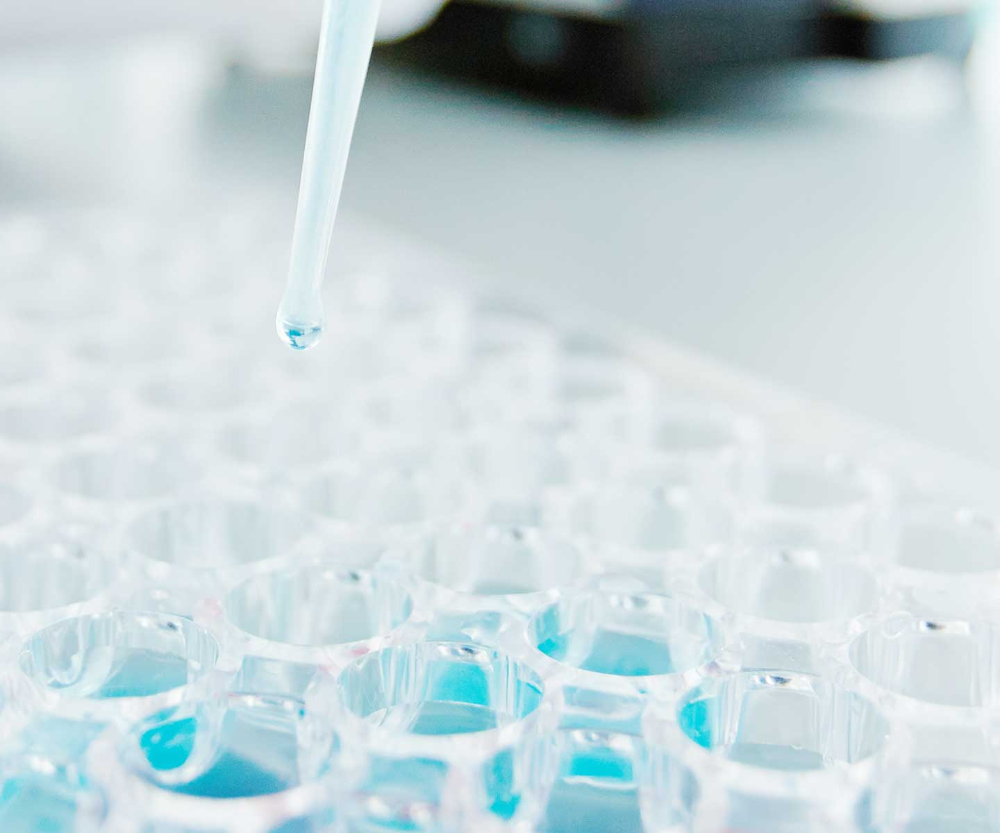
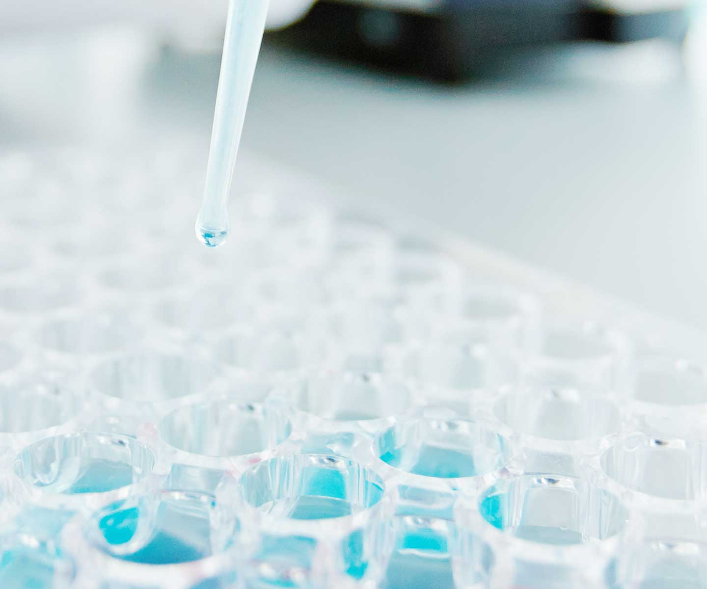
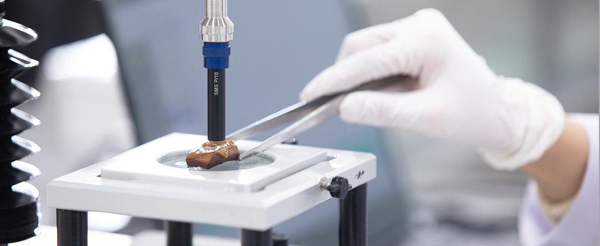

연구개발
소비자의 니즈와 시장 선호도에 부합하는 신제품을 출시하고 품질을 개선합니다.
-

제품개발
롯데제과, 롯데칠성음료, 롯데GRS와 같은 롯데 식품 계열사를 비롯해 유통사 PB 등 각종 신제품의 연구 개발을 진행합니다. 소비자와 시장에 대한 철저한 분석을 기반으로 제품의 컨셉을 선정하고, 원료 선별 및 배합 등의 과정을 거칩니다. 이에 대한 지속적 검증을 기반으로 제품 규격 설정, 디자인, 안전성 확보 단계를 거쳐 제품을 출시합니다. 모든 과정을 꼼꼼하게 점검해 맛과 품질은 갖춘 것은 물론, 소비자의 건강과 행복에 기여할 수 있는 제품을 시장에 내놓을 수 있도록 최선을 다하고 있습니다.
-
품질개선
신제품 출시는 물론, 끊임없이 변화하는 트렌드와 시장 니즈에 맞게 기존 제품의 품질 또한 지속적으로 향상시킵니다. 자체 소비자 조사 및 관능 평가, 첨단 기술을 활용한 객관적 데이터를 기반으로 소비자가 만족할 수 있는 방향으로 제품을 발전시키고 있습니다. 이로써 원료 공급 차질과 같은 이슈 상황에서도 동일한 품질의 제품을 제공하도록 노력하고 있습니다.